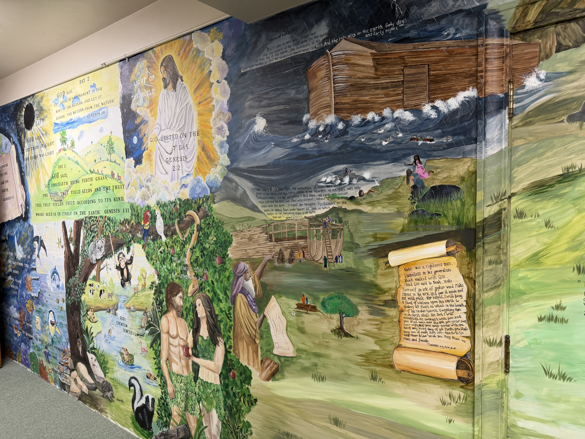
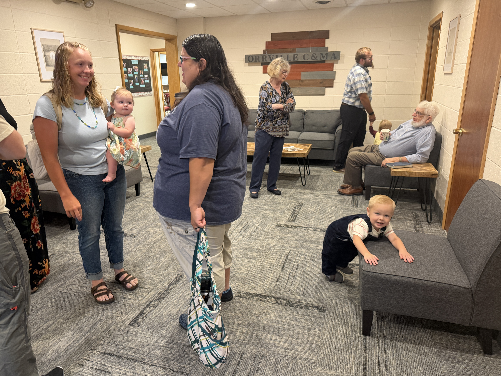
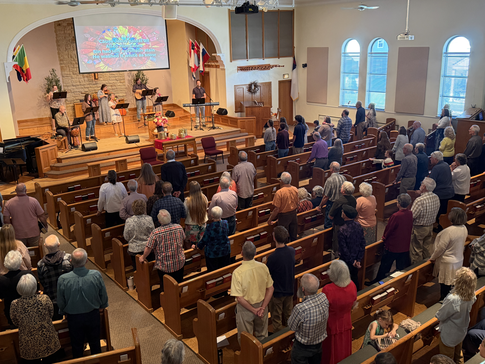
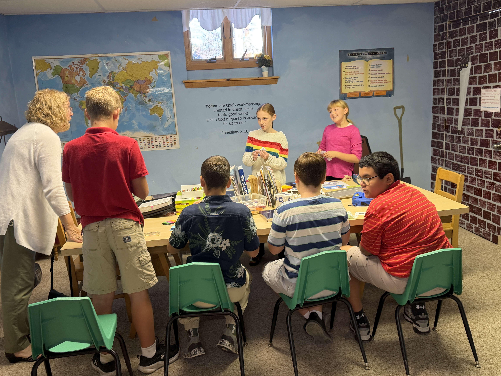
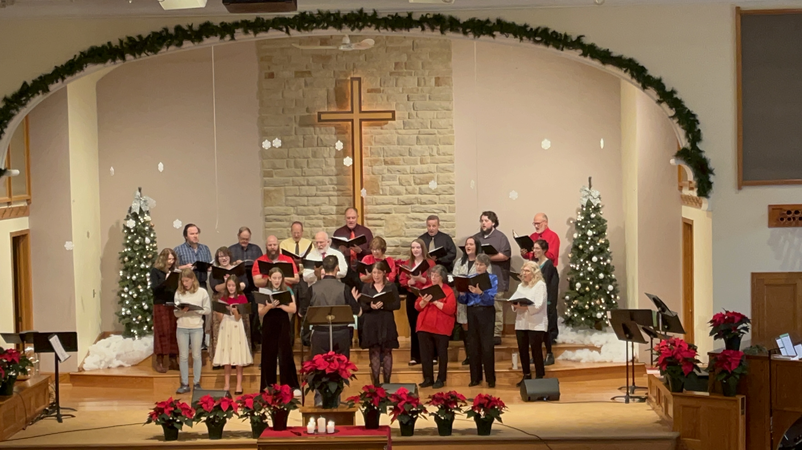
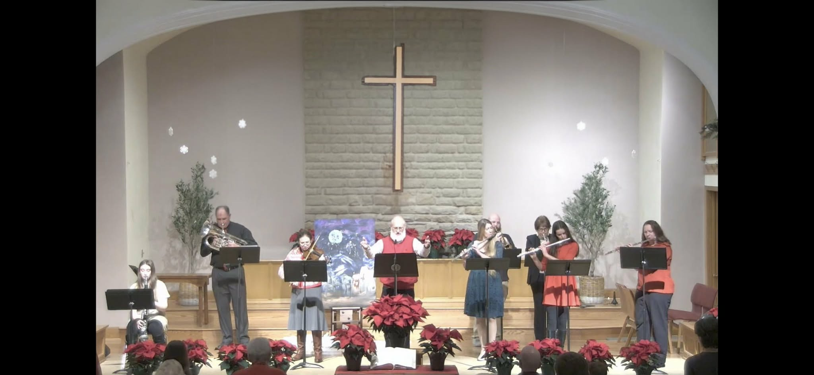

Gathered in His Name
Worship & Sermons
Join us in person or online every Sunday as we encounter God through worship, prayer, and the preaching of His Word.
Watch Live or On Demand
All Sermons on YouTube
This Sunday's Message
Our 10:30 AM Sunday service is live-streamed every week. If you missed it, all messages are archived on our YouTube channel and available anytime.
Sunday Morning
Plan Your Visit
Service Schedule
- Coffee Fellowship9:00 AM
- Sunday School (All Ages)9:15 AM
- Worship Service Begins10:30 AM
- Live Stream Begins10:30 AM
- Office Hours Tue–Fri8 AM – 2 PM
📍 Orrville C&MA Church
300 S. Walnut Street
Orrville, OH 44667
(330) 682-7666
First Time Here?
Plan Your Visit
What to Expect
Whether you've been attending church your whole life or this is your very first time, you are warmly welcome at Orrville C&MA. Our Sunday worship service is about 60–70 minutes long.
1
Contemporary Worship MusicBlend of hymns and modern worship songs led by our worship team
2
Biblical PreachingExpository messages that apply Scripture to everyday life
3
Children's ProgrammingAge-appropriate classes available during the service for kids
4
Welcoming CommunityCoffee & fellowship before service; you'll never stand alone





